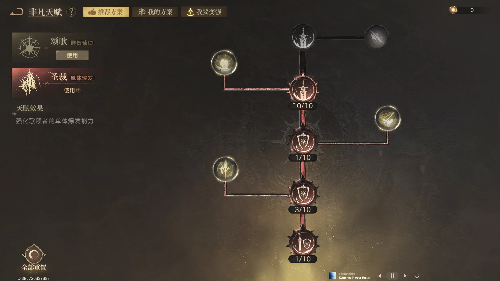
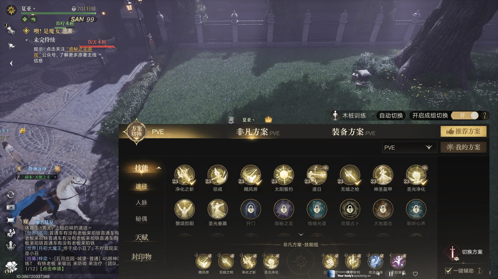
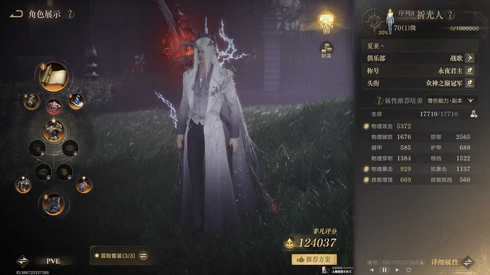
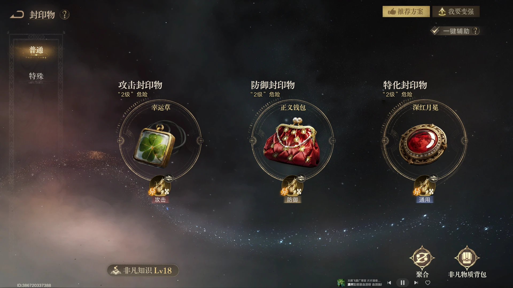

序列 8 非凡天赋
今日开放序列 8 后，非凡天赋优先服务穿刺门槛；面板未达标时继续补穿刺。

穿刺未达 1300 时继续补穿刺
如果穿刺没有达到 1300，依然以穿刺为主选择天赋点，用来补足穿刺，不要过早转去堆其他输出属性。
达到门槛后再调整属性
穿刺达到 1300 后，再结合自身面板调整天赋和装备，把溢出的部分转移到其他收益更高的属性。
圣光净化与穿刺
圣光净化提供的穿刺不必担心溢出，但要同时关注技能覆盖率和实际面板底线。

圣光净化的穿刺可以计入面板
序列 8 的圣光净化提供穿刺，不用担心因此溢出。如果可以调整穿刺，也可以把这部分收益补到其他属性上。
注意覆盖率与最低穿刺
圣光净化的技能覆盖率只有 50%，需要注意实际降低后的穿刺不要太低，尽量不要低于 1100。
属性优先级
其他属性要求继续沿用上期攻略；两项基础门槛达标后，按收益顺序补输出。

基础门槛先补穿刺与破防
穿刺优先补至 1300；达到穿刺门槛后，再把破防补到上期攻略要求的目标值，之后再继续调整其他属性。
收益顺序：怪物专攻 > 技能增强 > 攻击
在基础门槛满足后，当前收益最高的属性顺序仍然是怪物专攻、技能增强、攻击，优先按这个顺序补齐。
封印物
封印物选择没有变化，继续按当前属性缺口补足；成型后再根据团本目标切换。

缺哪部分就用哪部分补
封印物沿用上期攻略的思路：根据自身缺少的属性选择对应封印物，不需要为了追求固定名单而牺牲当前面板。
团本追伤再考虑神灯
玩枪时优先保证核心输出封印物；关键属性未达标时先补足，进入团本后再根据战斗节奏考虑神灯刷新技能冷却。
秘偶
上阵组合优先服务怪物专攻与防御穿透；当前 PVE 实际上阵的是星之虫守秘和星之虫泳。

实际 PVE 上阵：星之虫守秘和星之虫泳
当前 PVE 常规推荐星之虫守秘和星之虫泳，作为 PVE 上阵组合。
破防未达标时优先补忽视防御
若破防尚未达到目标，可将星之虫泳替换为提供忽视防御的上阵秘偶，先完成属性阈值，再回到常规组合。